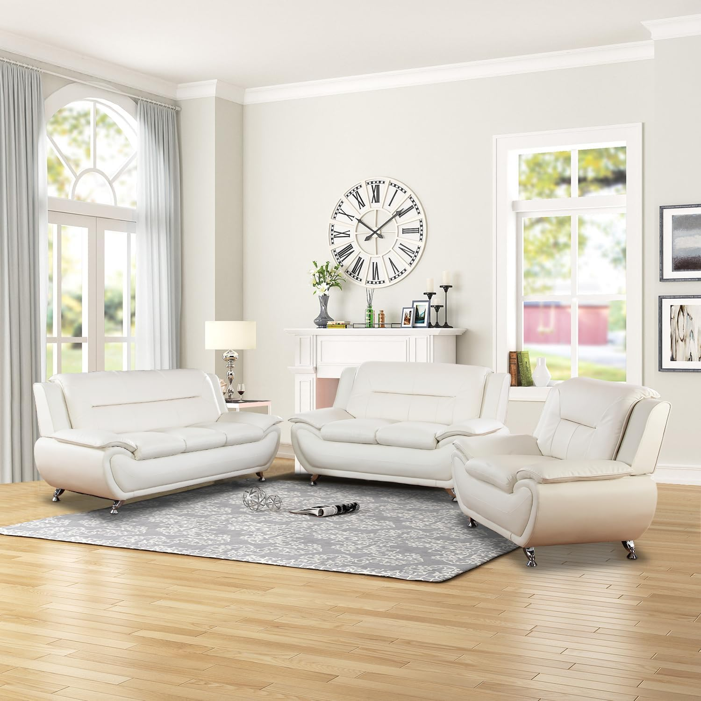

That’s evident in the way that the period minimalism of the original moldings are amplified with an elegant ivory and gold console table, or a vintage Ethan Allen sofa was reupholstered in a golden tan Kravet velvet that Nozawa’s team sourced. —Mark Holgate, Vogue, 9 Aug. 2024 In this living room, a curved sofa and two chairs circle a round coffee table to create a cozy furniture arrangement that's ideal for conversation. —Jessica Bennett, Better Homes & Gardens, 8 Aug. 2024 There was a master bedroom with a king-size bed, a second bedroom with two queen-size beds, and a sofa sleeper. —Jeanne Phillips, The Mercury News, 8 Aug. 2024 For instance, give your leather sofa a makeover with Leather Honey Non-Toxic Leather Cleaner, which is super moisturizing and will breathe new life into the material — get it for just $17. —Becca Blond, Travel + Leisure, 3 Aug. 2024
